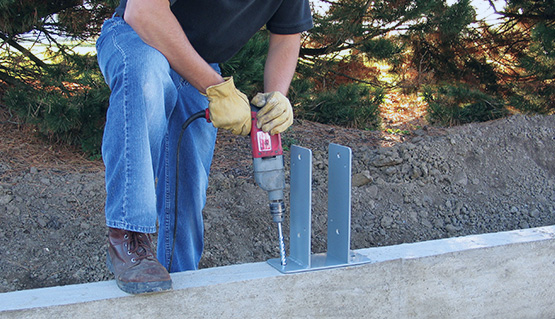

Column Geometry For Efficient Framing
A successful structural program begins with a clear view of how vertical members will be fabricated, transported, and installed. Early decisions about precast concrete columns affect mold reuse, reinforcement congestion, and the amount of material required for a given load path. For precast concrete columns, a consistent family of sizes can simplify procurement while still allowing carefully justified variations at transfer levels, perimeter conditions, or zones with unusual forces. This approach helps teams compare design options on total project value rather than unit cost alone.
Digital modeling can make these decisions more transparent by linking member dimensions to quantities, production constraints, and erection sequence. With precast concrete columns, engineers can test slenderness, lateral stability, fire protection allowances, and crane access before drawings are released. The model should also record tolerances for molds, reinforcement cages, and temporary bracing, because small deviations can accumulate across a tall assembly. When precast concrete columns are reviewed alongside production data, teams can identify conflicts before they become costly site changes.
Once the member family is established, performance should be checked across the full operating environment. Exposure classification, fire duration, abrasion risk, and inspection access can influence finishes and protective measures, while transport limits may determine whether a longer unit should be divided into stages. Clear responsibility for approvals, revisions, and field verification gives contractors dependable information without restricting practical judgment. In this process, precast concrete columns become more than isolated products: they form a repeatable part of the building system.

Optimizing Slender Concrete Members
A reliable structural assessment starts by identifying the actions and restraints that govern a vertical support throughout its service life. precast concrete columns should be checked for axial demand, bending caused by eccentricity, and second-order amplification rather than judged by compression resistance alone. The analytical model should reflect realistic end conditions, diaphragm participation, and flexibility in adjoining members. For precast concrete columns, temporary stability assumptions must be separated from the restraints that will exist after the surrounding structure is complete. Serviceability can be equally decisive, since movement, cracking, vibration, or local stress concentrations may affect finishes and occupants before ultimate capacity is approached. Reviewing these conditions together gives the design team a defensible basis for selecting dimensions, reinforcement, and stability provisions.
Detailing should then turn calculated demands into a buildable and inspectable arrangement. In precast concrete columns, reinforcement should provide reliable anchorage and confinement where force paths change, while splice locations should be chosen with regard to fatigue, cyclic demand, and access for verification. For precast concrete columns, cover, fire resistance, and tolerances require careful attention because small deviations can reduce the margin available at highly stressed regions. Independent checking and clear acceptance criteria help distinguish intentional design allowances from defects that need correction before the element is accepted. A final review of the calculation model against the approved detail can also reveal assumptions that are difficult to verify in practice, allowing them to be resolved before work proceeds.
Performance management continues after approval and construction. For precast concrete columns, a proportionate inspection program can track visible cracking, corrosion indicators, movement, and changes in adjacent loads without creating unnecessary administrative effort. Baseline photographs and survey records make later comparisons more useful, while trigger levels define when an engineer should review the condition in detail. If observations differ from the original assumptions, the response should begin with a documented assessment rather than an immediate alteration. Retaining calculations, test evidence, and approved revisions in one accessible record also supports future maintenance and refurbishment. This approach links design intent with ongoing evidence, helping owners address emerging risks early and preserve dependable structural performance.
Custom Shapes For Architectural Expression
A building can communicate its identity through proportion, rhythm, and the way structural elements meet public space. precast concrete columns may frame entrances, atriums, and sheltered walkways with a measured cadence, while selected variations in profile introduce interest without visual clutter. Their geometry should relate to ceilings, walls, and landscape features so each element contributes to a coherent whole. precast concrete columns can also help designers balance a strong presence with clear circulation, comfortable sightlines, and practical access for maintenance.
Material choices deepen that visual language. precast concrete columns may receive exposed aggregate, polished faces, integral color, or patterned textures, enabling different areas to share a family resemblance while retaining individual character. Light and shadow can emphasize relief throughout the day, and full-scale samples help teams judge color and texture under actual project conditions. precast concrete columns should be considered with adjacent finishes, cleaning methods, and expected weathering so the initial impression remains consistent over time.
Good outcomes depend on early communication among designers, engineers, fabricators, and installers. Shared digital models, sample reviews, and clear approval stages reduce surprises when unusual geometry, concealed services, or special surface treatments are introduced. precast concrete columns can consequently do more than support a building; it can guide movement, mark transitions, and create a memorable point of reference. With careful documentation and realistic maintenance planning, visually distinctive elements can remain durable, useful, and aligned with the wider project.
SCI Laminated Column Product
SCI Laminated Column Product
W3682 Willow Road Curtiss, WI 54422
715.229.2240